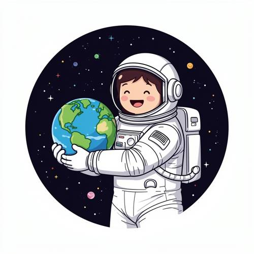
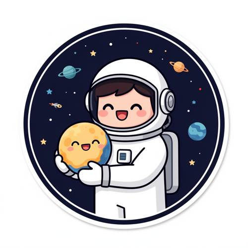

Entity Layout — A flat-style badge design shows a happy astronaut hugging a small plan
A flat-style badge design shows a happy astronaut hugging a small planet on the left. They all smile and the background is the deep universe.

Direct — one call, no iteration

Continuum — Kimi K3 + FLUX.2-dev
Judge — Direct
FAILEntity Layout - Two-Dimensional Space — The image shows an astronaut hugging a planet, but the composition is centered within the circular frame, not positioned on the left.
PASSStyle — The image is rendered in a cartoon style with bold outlines and mostly solid colors, presented within a circular frame against a space background, which is consistent with a flat-style badge design.
FAILGrammar - Consistency — The astronaut is smiling, showing an open mouth and happy eyes. The planet, depicted as Earth, does not have a face and is not smiling. Therefore, the condition that "they all smile" is not met.
PASSAction - Contact Interaction — The astronaut is depicted with both arms wrapped around a small planet, holding it in front of their chest in a hugging gesture.
PASSAttribute - Expression — The astronaut has a wide, open-mouthed smile and curved, happy-looking eyes, clearly conveying a happy expression.
Judge — Continuum
PASSEntity Layout - Two-Dimensional Space — The image displays an astronaut holding a small planet. The planet is positioned to the left side of the astronaut's torso, from the viewer's perspective.
PASSStyle — The image is rendered in a flat, illustrative style with bold outlines and simple color fills. It is framed within a circle, consistent with a badge design.
PASSGrammar - Consistency — Both the astronaut and the small planet are depicted with smiling faces. They both have wide, open-mouthed smiles and curved, happy eyes.
PASSAction - Contact Interaction — The astronaut's arms are wrapped around the small planet, holding it close to their chest in a hugging motion.
PASSAttribute - Expression — The astronaut's face is visible, showing a wide, open-mouthed smile and crescent-shaped eyes, which is a clear expression of happiness.
What the agent did
Thinking
The user wants a flat-style badge design: happy astronaut hugging a small planet on the left, both smiling, deep universe background. Let me generate with flux2-dev.
Step 1 — `generate_image`
{
"model": "flux2-dev",
"prompt": "Flat vector-style circular badge design: a cute happy astronaut in a white spacesuit with a smiling face visible through the helmet visor, hugging a small round smiling planet positioned on the left side of the badge. The planet has a cheerful kawaii face with closed happy eyes and a big smile. The astronaut also smiles warmly. Background inside the badge is deep dark navy-blue outer space with small flat stars, tiny dots, and a few distant flat planets. Bold flat shapes, minimal shading, thick clean outlines, sticker-like vector illustration, vibrant accent colors, circular badge border with a thin ring, no text."
}
Result img_0
Thinking
The image looks quite good: circular badge, flat style, happy astronaut hugging a small smiling planet on the left, deep space background with stars and planets, both smiling. This matches the prompt well. Mark best and stop.
Model
The first generation already nails the brief — let me verify the details: - ✅ Circular flat-style badge with clean ring border - ✅ Happy astronaut in a white suit, big open-mouth smile and closed happy eyes - ✅ Small smiling planet (kawaii face, blush cheeks) held on the **left** side, being hugged with both arms - ✅ Deep navy universe background with flat stars, ringed planets, and a tiny rocket - ✅ Bold outlines, minimal shading, sticker-like vector look Everything the prompt asks for is present and correct. Marking this as the final result.
Step 2 — `mark_best`
{
"image": "img_0",
"reason": "Matches all requirements: flat circular badge, smiling astronaut hugging a small smiling planet on the left, deep-space background, clean vector style. No flaws worth editing."
}
Model
Done! The badge design is complete: **What's in it:** - A **circular flat-style badge** with a thin double-ring border, sticker aesthetic - A **happy astronaut** in a white spacesuit — closed happy eyes, open smile, blush cheeks — hugging a **small smiling planet** on the **left** with both arms - The planet has its own kawaii face, so they're *both* smiling 😊 - **Deep navy universe** background with flat stars, ringed planets, a tiny rocket, and dotted sparkles The first render matched every element of your description, so no edits were needed — this is the final image.